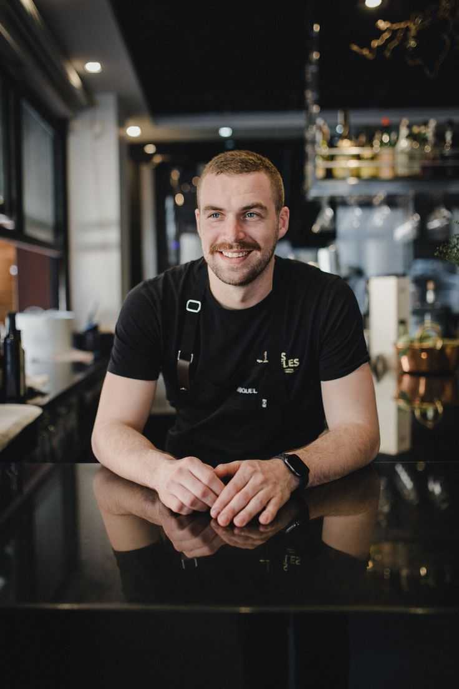
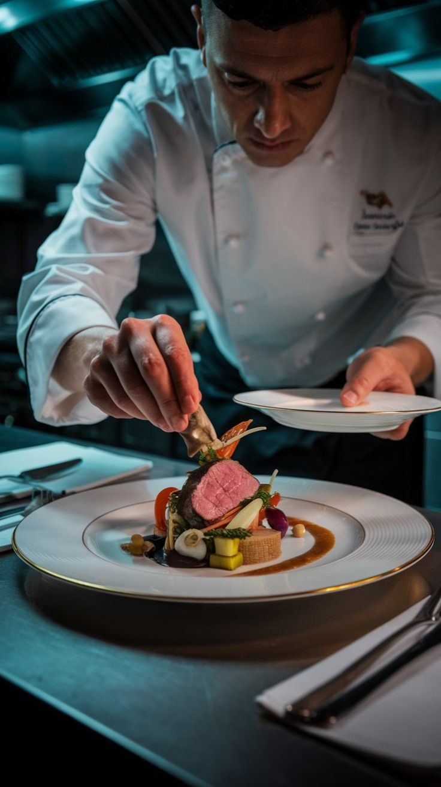

The cooks

JULIAN KELLER
EXECUTIVE CHEF
Driven by a bold culinary vision, Chef Julian Keller fuses the essence of the Silk Road with contemporary techniques. His creations are not just meals, but stories told through flavor, texture, and aroma.


Eleanor Vance
CHEF DE PARTIE (SAUCES)
The expert in binding exquisite aromas. Her sauces are the secret that marries fresh ingredients, creating a harmony that lingers on the palate long after the meal ends.

Marco Rossi
CHEF DE PARTIE (VEGETABLES)
The master of the earth. Elevating humble vegetables into works of art, Marco ensures every produce is treated with respect, bringing out its truest, most vibrant essence.